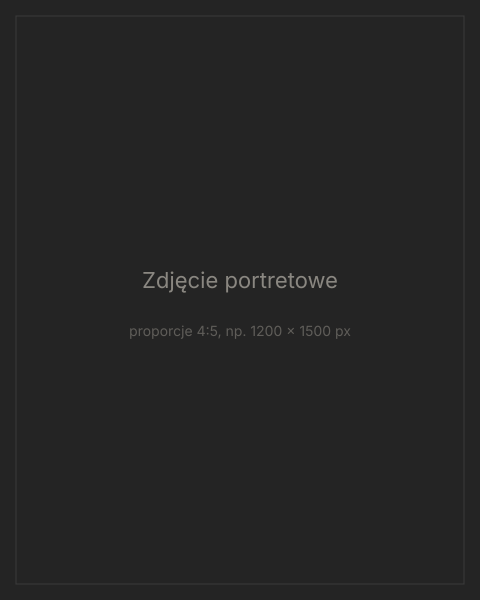

Psycholog sportu · Wrocław
Ignacy Mikołajczak
Piłka nożna jest ze mną od mundialu w 2006 roku i przez wiele lat sam grałem. Dziś jako psycholog sportu wspieram zawodników, drużyny, trenerów i rodziców, bo sport to coś więcej niż wynik.
O mnie
Wierzę, że sport powinien dawać więcej niż lepsze wyniki. Powinien pomagać ludziom rozwijać się i wyposażać ich w umiejętności, które przydają się daleko poza boiskiem. Pracuję z drużynami młodzieżowymi i juniorskimi w piłce nożnej i piłce ręcznej.
Dlaczego psychologia sportu
Przez wiele lat sam grałem w piłkę. Wiem, jak wygląda stres przed meczem, błąd, który ciągnie się przez całą połowę, i powrót po kontuzji. Dlatego zostałem psychologiem sportu.
- Wczytywanie…
Moja filozofia pracy
-
Więcej niż gra
Sport ma pomagać rosnąć jako człowiek, nie tylko jako zawodnik. Przywództwo, odporność, dyscyplina i odpowiedzialność, wyćwiczone na boisku, procentują później w szkole, pracy i życiu.
-
Metody sprawdzone w badaniach
Pracuję narzędziami, których skuteczność potwierdzono w badaniach z psychologii sportu: treningiem uwagi, regulacją pobudzenia, wyznaczaniem celów i rutynami przedstartowymi.
-
Umiejętności, które się trenuje
Pewność siebie i koncentracja to nie cechy, z którymi się rodzimy. Można je ćwiczyć tak samo systematycznie jak szybkość czy technikę.
-
Współpraca z trenerem i sztabem
Jeśli zawodnik się na to zgadza, ustalam wspólny kierunek z trenerem, fizjoterapeutą i rodzicami. Przy tym zawsze szanuję poufność rozmów.
-
Samodzielność zamiast zależności
Moim celem jest, by zawodnik z czasem coraz rzadziej potrzebował mojego wsparcia i w kluczowym momencie meczu umiał sam sięgnąć po właściwe narzędzia.
Doświadczenie
Wczytywanie…
Wykształcenie
- Wczytywanie…
W czym mogę Ci pomóc
Sport wygląda inaczej z perspektywy zawodnika, rodzica i trenera. Wybierz, kim jesteś, a zobaczysz, z czym najczęściej pracujemy.
Zawodnik / zawodniczka
-
Stres startowy
Ścisk w żołądku przed meczem, nieprzespana noc przed zawodami, „sparaliżowane” nogi w pierwszych minutach. Uczymy się regulować pobudzenie tak, by pracowało na Twoją korzyść.
-
Koncentracja
Rozproszenie po błędzie, myślenie o wyniku zamiast o kolejnej akcji. Ćwiczymy powrót uwagi do „tu i teraz” w ciągu kilku sekund.
-
Powrót po kontuzji
Lęk przed ponownym urazem i utrata zaufania do własnego ciała. Wspieram zawodnika na każdym etapie rehabilitacji, w kontakcie z fizjoterapeutą.
-
Motywacja
Spadek zaangażowania, trening „na autopilocie”, brak jasnego celu. Wspólnie szukamy tego, co naprawdę napędza Cię do pracy.
-
Wypalenie
Chroniczne zmęczenie, cynizm wobec sportu i poczucie, że wysiłek nie ma sensu. Pomagam odbudować równowagę między obciążeniem a regeneracją.
-
Presja wyniku
Oczekiwania trenera, rodziców, kibiców i własne. Uczymy się oddzielać wartość człowieka od rezultatu meczu i grać odważniej.
Rodzic
-
Jak wspierać, a nie naciskać
Co mówić dziecku przed meczem i po nim, żeby dodać mu pewności, a nie dołożyć presji. Wspólnie szukamy Twojej roli na trybunach.
-
Porażki i błędy dziecka
Jak rozmawiać po przegranym meczu i jak pomóc dziecku wyciągać wnioski zamiast się obwiniać.
-
Sport i szkoła
Jak pogodzić treningi, naukę i odpoczynek, żeby młody zawodnik nie spłonął przedwcześnie.
-
Kiedy szukać pomocy
Jakie sygnały (spadek chęci, lęk przed meczami, wycofanie) warto potraktować poważnie i jak wygląda pierwsza rozmowa.
Trener / trenerka
-
Komunikacja z zawodnikami
Jak przekazywać krytykę i pochwałę, żeby zawodnik słyszał informację, a nie atak. Praca nad stylem rozmów w szatni i na treningu.
-
Atmosfera w zespole
Konflikty, podziały, rywalizacja o miejsce w składzie. Pomagam budować zaufanie i wspólne cele.
-
Motywowanie młodzieży
Jak utrzymać zaangażowanie zawodników w różnym wieku i na różnym poziomie, bez straszenia i bez obniżania wymagań.
-
Własny stres trenera
Presja wyniku dotyczy też Ciebie. Pracujemy nad regulacją emocji w trakcie meczu i nad równowagą między pracą a regeneracją.
Jak wygląda współpraca z psychologiem sportu
-
Konsultacja wstępna
Krótka rozmowa, w której opowiadasz, z czym przychodzisz, a ja wyjaśniam, jak mogę pomóc i czy współpraca ma sens.
-
Diagnoza
Jedno lub dwa spotkania, wywiad i standaryzowane kwestionariusze. Na tej podstawie ustalamy konkretne, mierzalne cele.
-
Regularne sesje
Spotkania co tydzień lub co dwa tygodnie, stacjonarnie albo online. Między sesjami ćwiczysz konkretne techniki na treningach i w meczach.
-
Ewaluacja
Co kilka tygodni sprawdzamy postępy względem celów i decydujemy, czy kontynuować, zmienić kierunek, czy zakończyć współpracę.
Oferta
Formę współpracy i ceny ustalamy na pierwszej rozmowie, bo zależą od Twoich potrzeb.
Klienci indywidualni
-
Konsultacja jednorazowa
Jedno spotkanie, na którym omawiamy konkretny problem (np. stres przed ważnym turniejem) i ustalamy, co możesz zrobić od razu.
-
Praca cykliczna
Regularne sesje z celami i ćwiczeniami między spotkaniami. Dla zawodników, którzy chcą systematycznie pracować nad swoją głową.
-
Przygotowanie do zawodów
Plan psychologiczny na turniej lub sezon: rutyny przedstartowe, plan na trudne momenty meczu, wyznaczanie celów.
Drużyny sportowe
-
Warsztaty dla drużyny
Jednorazowe lub cykliczne spotkania z całym zespołem: koncentracja, komunikacja, radzenie sobie z presją.
-
Stała współpraca z klubem
Praca z zespołem przez cały sezon, w tym rozmowy indywidualne z zawodnikami, jeśli się na to zgadzają.
-
Wsparcie sztabu i rodziców
Spotkania z trenerami i rodzicami zawodników: wspólne zasady, komunikacja i rozwiązywanie trudnych sytuacji.
Opinie klientów
Wczytywanie…
Umów się na spotkanie
Pierwsza rozmowa pozwala sprawdzić, czy mogę Ci pomóc. Napisz, w jakim sporcie jesteś i z czym chcesz pracować, a umówimy termin (stacjonarnie we Wrocławiu lub online).